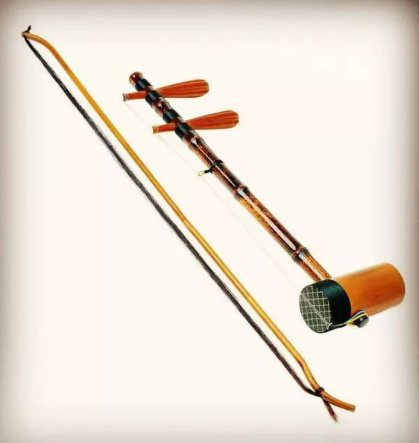
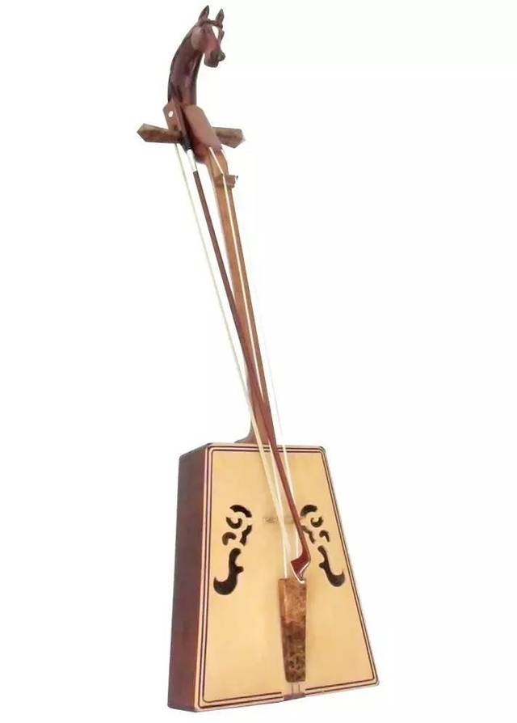

01
起源
Origins — Tang & Song Dynasties
马头琴的前身可追溯至唐宋时期的拉弦乐器奚琴。奚琴最早见于唐代文献，以竹片轧弦发声，是北方游牧民族与中原文化交流的产物。据《元史》记载，早期的马头琴类乐器琴首装饰为龙首，这与中原宫廷乐器的传统一脉相承。
The predecessor of the Morin Khuur can be traced to the xiqin, a bowed string instrument of the Tang and Song dynasties. Early versions featured a dragon-head decoration, reflecting Central Plains court traditions.
关键转折
奚琴从弹拨向拉弦的转变，奠定了马头琴"以弓擦弦"的基本发声原理。这一变化使音色从短促清脆变为绵长深沉，更适合表现草原的辽阔意境。
托布秀尔
弹拨乐器
蒙古族传统弹拨乐器，两弦，音箱呈方形，常用于伴奏说唱艺术。
02
演变
Transformation — Yuan to Qing
元代时，马头琴的前身"火不思"已经出现，这是一种四弦弹拨乐器，流行于蒙古宫廷。至明清时期，拉弦乐器"潮尔"在蒙古草原广泛流传，琴首装饰逐渐从龙首演变为马头——这一变化反映了蒙古族对马的深厚感情从宫廷符号转向草原信仰。
By the Yuan dynasty, the "huobusi" had emerged. During the Ming-Qing period, the bowed "chaor" spread across the grasslands, and the dragon-head decoration gradually transformed into a horse head.
关键转折
龙首变马头——这不是简单的装饰替换，而是文化认同的转变。龙是中原皇权的象征，马是蒙古族生命的一部分。琴首的更迭，标志着这件乐器从"宫廷礼器"走向"草原之魂"。
火不思
元代 · 弹拨
四弦弹拨乐器，梨形音箱，流行于元代蒙古宫廷。后传入中原，清代被收入宫廷乐器编制。
潮尔
明清 · 拉弦
双弦拉弦乐器，是马头琴最直接的前身。"潮尔"也是马头琴在清代的名称。
胡琴
唐宋 · 拉弦
北方游牧民族的拉弦乐器泛称，与奚琴并行发展。
03
定型
Standardization — Late Qing to Present
清末至民国时期，马头琴的形制逐渐固定。色拉西（1887—1968）将民间散落的演奏技法加以整理，培养了巴拉干、桑都仍等弟子，奠定了现代马头琴艺术的基础。1949年后，马头琴经历了从两弦到四弦的技术革新。2006年被列入首批国家级非物质文化遗产名录。
From the late Qing to the Republic, the form gradually stabilized. Serashi organized scattered folk techniques. In 2006, it was inscribed on China's first National Intangible Cultural Heritage list.
里程碑
2006年列入首批国家级非遗名录。2008年北京奥运会开幕式演奏。2009年入选联合国教科文组织"人类非物质文化遗产代表作名录"。
科尔沁流派
东部
音色深沉、技法古朴，以叙事性见长，代表人物色拉西。
锡林郭勒流派
中部
音色宽广、旋律舒展，擅长表现草原的辽阔意境。
鄂尔多斯流派
西部
节奏明快、技巧华丽，代表人物齐·宝力高。
呼伦贝尔流派
北部
音色柔美、抒情细腻，受到布里亚特蒙古音乐影响。
1 / 3
PPT Archive / 历史页面融合展示


融合 PPT 的历史页面内容，保留历史脉络信息的同时，用双图并列展示替换原右侧演化图。